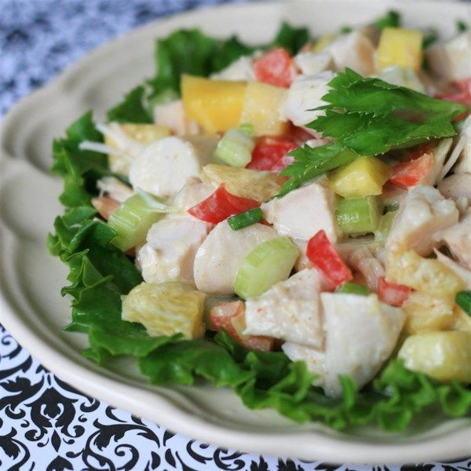
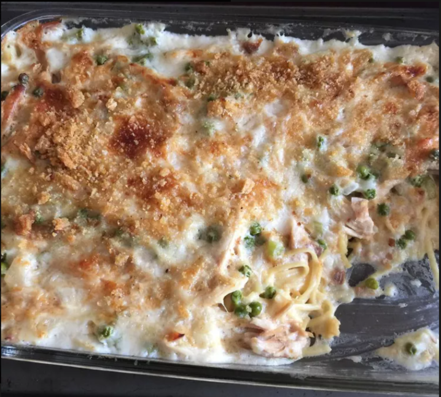

Turkey Tetrazzini

Ingredients
- 1 (16 ounce) package uncooked spaghetti
- ½ cup butter
- ½ cup all-purpose flour
- 3 cups chicken broth
- 2 cups milk
- 1 ⅔ cups grated Parmesan cheese
- 4 cups chopped cooked turkey
Directions
Step 1
Step 2
Step 3
Step 4

Go back to Homepage